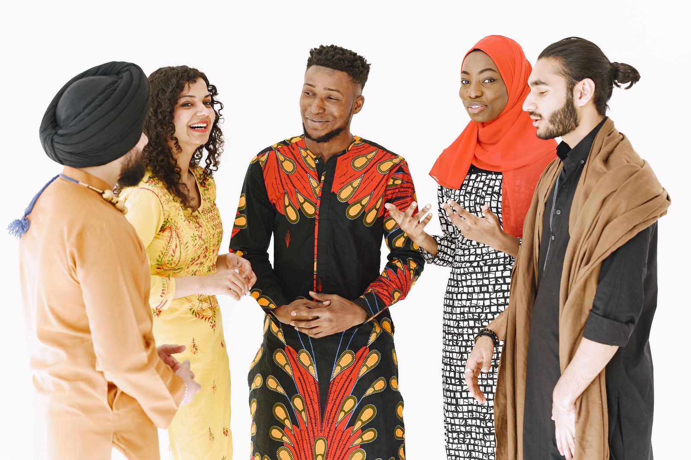

Refugee & Newcomer Support
Orientation and one-on-one guidance that help newly arrived families navigate life in a new country.
Welcome · Belong · Thrive
We walk alongside newly arrived and resettled families — offering interpretation, education, youth programs, and the everyday help they need to feel safe, settled, and self-reliant in their new community.
Our Mission
The Mohawk Valley Somali Bantu Community Association exists to help refugee and immigrant families overcome language and cultural barriers, access vital services, and become confident, contributing members of the Utica community.
What We Do
Orientation and one-on-one guidance that help newly arrived families navigate life in a new country.
Maay Maay, Somali, and English language help for appointments, schools, and essential paperwork.
English classes, citizenship preparation, and homework help that open doors to school and work.
After-school activities, mentoring, and family support that help young people thrive.
Who We Serve
Utica has long been a home for refugees rebuilding their lives. The Somali Bantu community — alongside many other newcomers — arrived after years of displacement, often facing language barriers, unfamiliar systems, and limited access to services.
We are neighbors helping neighbors: a familiar face, a trusted translator, and a steady hand toward a stable future.
A registered 501(c)(3) public charity · EIN 27-0158992 · founded by community members in 2008.

When a family can be understood, fill out the right form, and find a neighbor who speaks their language, a new country starts to feel like home.Mohawk Valley Somali Bantu Community Association
Whether you’re a family seeking support or a neighbor who wants to help, we’d love to hear from you.